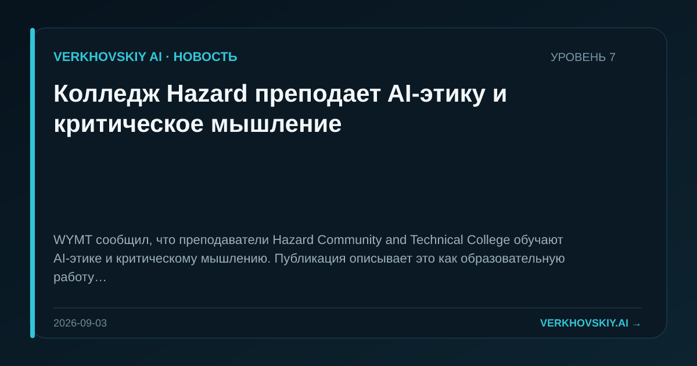

Колледж Hazard преподает AI-этику и критическое мышление
WYMT сообщил, что преподаватели Hazard Community and Technical College обучают AI-этике и критическому мышлению. Публикация описывает это как образовательную работу с AI. Почему это важно: Профессиональное образование начинает включать не только навык применения AI, но и нормы оценки его последствий. Это расширяет подготовку кадров за пределы технических компетенций.